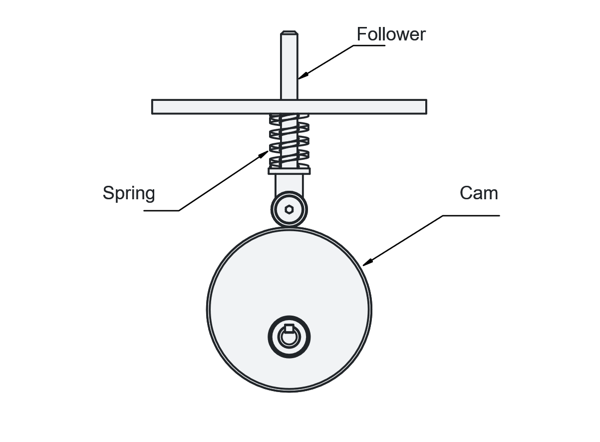
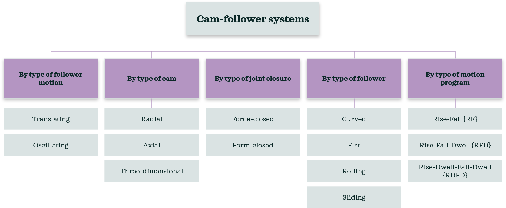

Cam and follower diagram

Classification of Cam-follower systems

SVAJ diagrams
Mechanical engineers and cam designers need to choose certain mathematical functions that define the motion of the cam follower. We typically plot these functions, i.e., displacement, s, velocity, v, acceleration, a, and jerk, j, as functions of the independent variable 𝜃, the camshaft angle. They are defined as follows:
\[ v = \frac{ds}{d\theta} \]
\[ a = \frac{d^{2}s}{d\theta^{2}} \]
\[ j = \frac{d^{3}s}{d\theta^{3}} \]
If we assume the angular velocity of the camshaft, ω, to be constant, then the relationship between θ and t, is simply:
\[ \theta = \omega t \]
And we call these graphs, defined for 360 degrees of the camshaft rotation, the SVAJ diagrams.
Here, six algorithms for the calculation of the SVAJ diagrams have been included, i.e., five for Rise-Dwell-Fall-Dwell (RDFD) and one for Rise-Fall-Dwell (RFD) motion programs, namely:
- Cycloidal displacement
- Modified Trapezoidal Acceleration
- Modified Sine Acceleration
- 3-4-5 Polynomial
- 4-5-6-7 Polynomial
- Single dwell Polynomial
Fundamental law of cam design
The algorithms take the following laws into consideration:
- Functions that describe displacement, s, velocity, v, and acceleration, a, must be continuous across the interval -- 360 degrees.
- The function that describes jerk, j, must be finite across the interval --360 degrees.
This is exemplified on Figures 3 - 8, for the cases of Cycloidal displacement, Modified Trapezoidal Acceleration, Modified Sine Acceleration, 3-4-5 Polynomial, 4-5-6-7 Polynomial, and a Single dwell Polynomial, where acceleration is continuous across the interval, while jerk is finite.